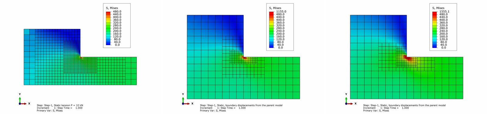
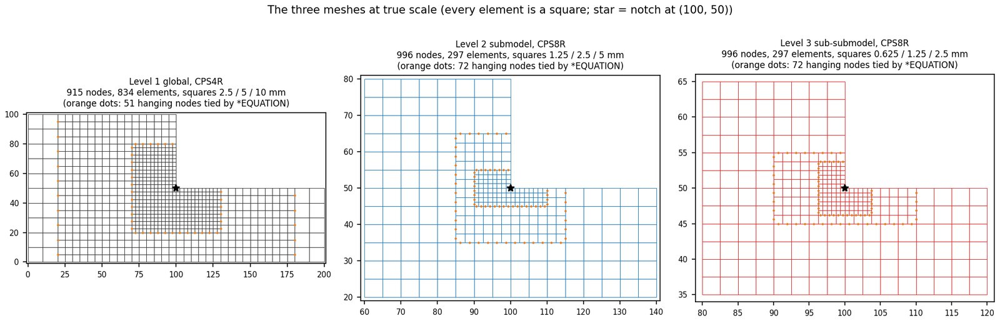
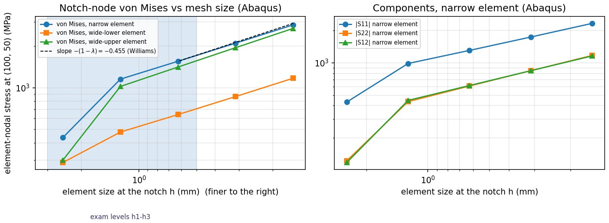
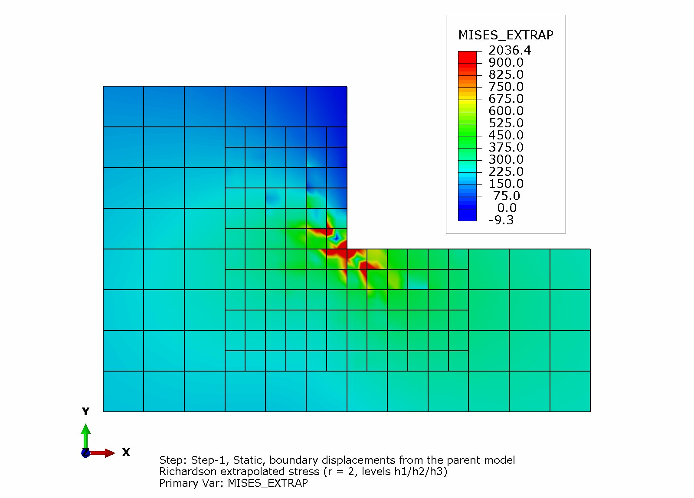
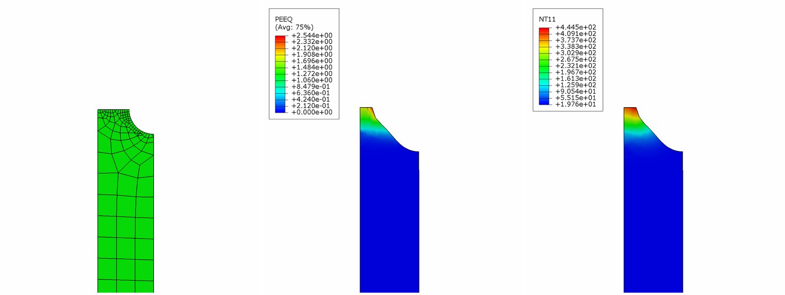
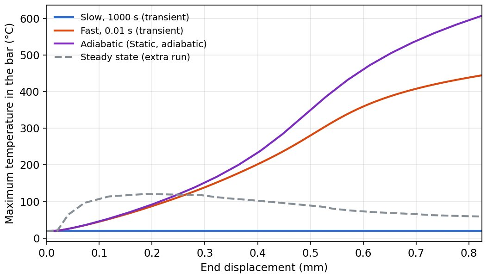

MENG 4553 Finite Element Methods · Fall 2026
Finite element analysis (Abaqus)
Finite element work in Abaqus for MENG 4553: a sharp-corner submodel study, a thermo-plastic necking lab and a final project. The highlight: our license only allows 1,000 nodes per model, so to see the stress at a sharp corner I zoomed in three times, each model feeding the next.

Highlight: a sharp corner in 1,000 nodes
The part is a stepped plate under 10 kN, about 200 MPa away from the step. Where the two widths meet there is a sharp 270° inside corner. In theory the stress there is infinite (the Williams singularity), so it keeps rising as the mesh gets finer. The question is what number you can honestly report, when the free Learning Edition caps every model at 1,000 nodes.
The approach: three tiers
- Tier 1 models the whole plate coarsely (915 nodes).
- Tier 2 cuts out the region round the corner and takes its edge displacements from tier 1 (996 nodes).
- Tier 3 zooms in again on the corner itself (996 nodes).
Each model stays under the limit, but together they reach a mesh far finer than one 1,000-node model could.

Results
I checked mesh convergence with Richardson extrapolation, as set out in ASME V&V 10. The extrapolated peak is 2,057 MPa, but the grid convergence index (GCI) is 40%. That doesn't mean the models are wrong. It is what a singular corner should do: the stress never settles. The useful conclusion is that you can't design to the peak at a sharp corner. You add a fillet, or you judge the part on the stress a short distance away.


Lab: thermo-plastic necking
A notched bar pulled until it necks, once slowly and once fast. Plastic work turns into heat, and how hot the neck gets depends on how fast you pull, because the heat has less time to escape.


Final project (in progress)
A notched shaft followed end to end in Abaqus: from manufacturing through to service loads, with plasticity, damage and thermal effects. The submodeling method above is how it gets enough detail at the notch.